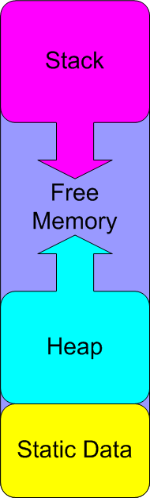
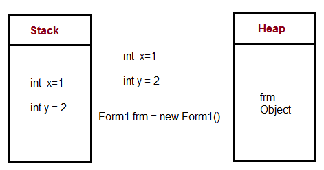

Let's Learn About The Memory
Today we will be looking at the memory operation of an Arduino; a micro-controller, that is basically a little, cute, micro computer, that you can program to automate stuff for you. The Arduino is a good place to learn about computer memory because it has so little of it so when you're programming you have to be aware of how you're using memory. Here are the different kinds of memory and how much of it the Arduino has:
- Flash:
-
- Used for holding the program image and initialized data
- Available: 32K bytes(32,000 bytes or 256,000 bits)
- Non-volatile, which means when powered off, it still remembers it's last state
- Cannot be modified at run-time
- 100,000 write cycles, this is how many times it's memory can be erased and written
- SRAM: (Static Random Access Memory)
-
- Used for holding run-time program needs
- Available: 2K bytes(2,000 bytes or 16,000 bits)
- Volatile, which means when powered off it loses all state
- Can be read and written to at run-time
- SRAM is sub-divided into three categories:
- Static Data:
-
- reserved space for global and static variables
- Variables with initial values are copied from Flash to SRAM when the program starts
- Heap Data:
-
- Dynamically allocated, grows from the top of Static data
- Stack Data:
-
- Used for local variables and maintaning a record of function calls
- Grows from the top of memory down towards the heap
- Every function call and variable allocation causes the stack to grow
- Returning from a function causes the local variables to disappear from the stack
- The stack grows and shrinks during runtime
- The stack is responsible for the "stack to deep" erreor you get during a recursive function
Here is a visual representation of the SRAM. you can see how the Stack grows from the top and the Heap grows from on top the Static data:
What's the differenc between the Heap and the Stack?
The stack is used when the size of memory needed is known, like a variable holding an Integer, or a Float. The heap is used when the size isn't known at run-time, like an object.
